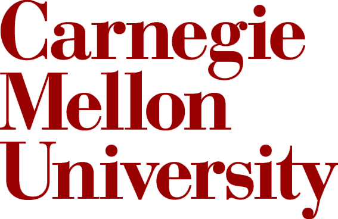

|
Ph.D. Student, Department of Computer Science and Technology,
Tsinghua University
Advisor: Prof. Weimin Zheng, Prof. Yongwei Wu
|
Sep. 2010 – Jan. 2016
|
 |
Visiting Student Researcher, Distributed Systems Group,
Stanford University
Supervisor: Prof. David Cheriton, Dr. Heiner Litz
|
Oct. 2014 – Aug. 2015
(10 months)
|
|  |
Visiting Scholar, Computer Architecture Lab,
Carnegie Mellon University
Supervisor: Prof. Onur Mutlu |
Nov. 2013 – May 2014
(6 months) |
|
B. Eng., School of Software,
Northeast Normal University
GPA: 3.9/4 |
Sep. 2006 – Jul. 2010 |